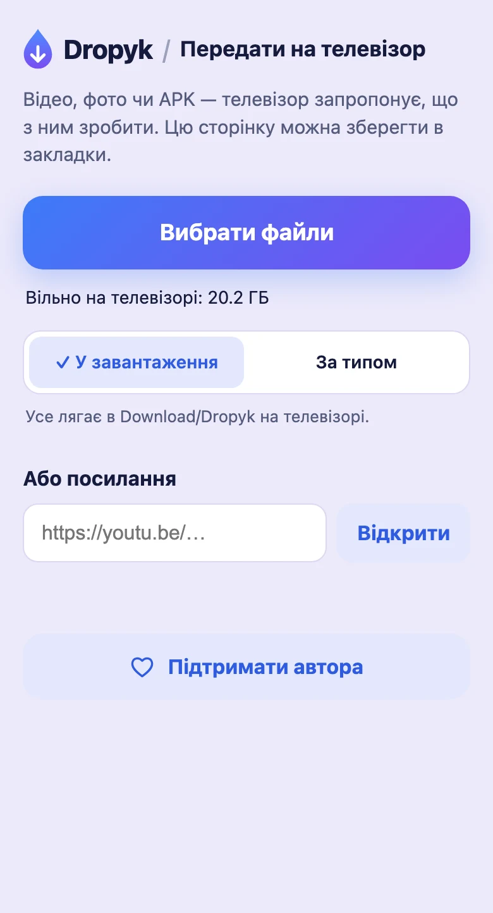
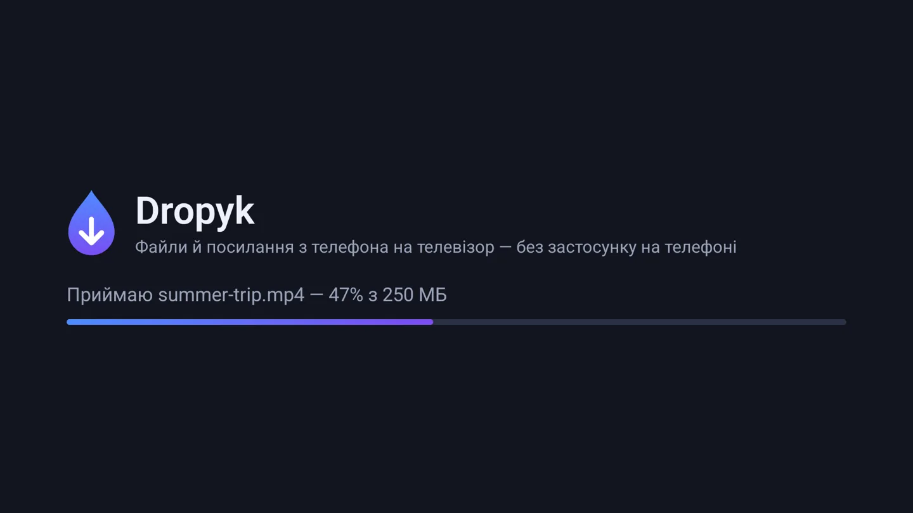
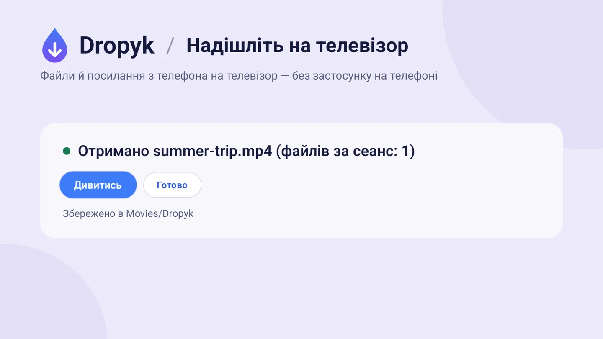
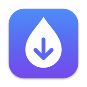
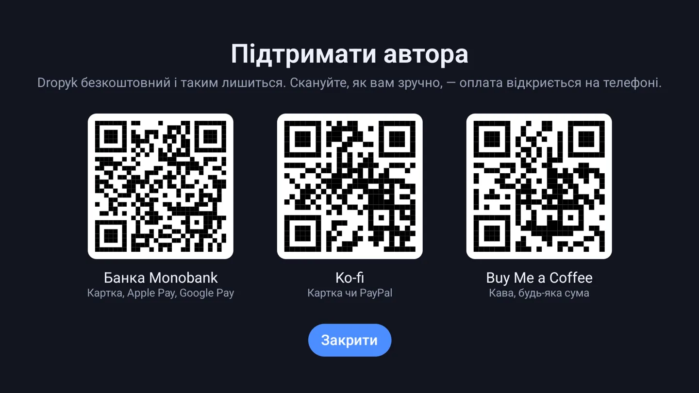

Для Android TV і Google TV
З телефона на телевізор — одним скануванням.
Фото, відео, файли й посилання через домашню мережу. Без акаунта і застосунку на телефоні.

- Без хмари
- Без акаунта
- Відкритий код, GPL-3.0
Як це працює
-
Відкрийте
Запустіть Dropyk на телевізорі. Ви побачите QR-код.
-
Скануйте
Наведіть камеру телефона на код. Відкриється сторінка з телевізора — її можна зберегти в закладки.
-
Надішліть
Виберіть файли або вставте посилання — вони одразу з'являться на телевізорі.
Що вміє

Великі файли — одразу на диск
Виберіть один файл чи сотню — вони йдуть по черзі. Фільм на 4 ГБ не проходить через пам'ять телевізора, а сторінка заздалегідь перевіряє вільне місце.

Одне натискання пультом
Телевізор сам пропонує дію: відео — дивитись, APK — встановити, фото — показати на екрані, посилання — відкрити.
Download/Dropyk.Movies/Dropyk, фото в Pictures/Dropyk, музика в Music/Dropyk, решта в Download/Dropyk.Ви обираєте, куди лягають файли
Перемикач на сторінці телефона, і телефон його запам'ятовує. «За типом» — плеєри й галереї знаходять файли там, де шукають насамперед.

Dropyk для Mac
У зворотний бік: приймайте файли з Android-телефона на Mac через вбудований у телефон Quick Share. Живе в рядку меню, вміє приймати автоматично й складає кілька файлів в одну теку. Форк NearDrop від Grishka. macOS 12+.
Встановлення
- Завантажте dropyk.apk.
- Перенесіть на телевізор застосунком Downloader, флешкою або командою
adb install dropyk.apk. - Дозвольте й відкрийте. Коли телевізор попросить, дозвольте встановлення з цього джерела, потім відкрийте Dropyk зі списку застосунків.
Android 7.0 або новіший. На Android 10+ дозвіл на доступ до пам'яті не потрібен.
Приватність
- Файли йдуть з телефона на телевізор вашою власною мережею. Жодного сервера посередині, нічого нікуди не вивантажується.
- В адресі сторінки є секретний ключ, тож надіслати може лише той, хто бачив код.
- Телевізор приймає, лише поки відкритий Dropyk. Без акаунта, реклами й стеження.

Підтримати автора
Dropyk безкоштовний і таким лишиться. Ті самі посилання є на екрані підтримки в телевізорі у вигляді QR-кодів.